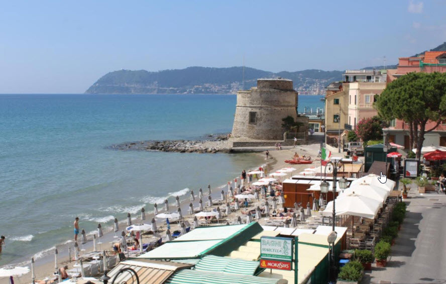

Der Strand von Alassio ist dreigeteilt: Auf dem Weg von einem Ende zum anderen überschreitet man nicht nur den Pontile Bestoso, sondern passiert auch den Leuchtturm von Alassio. Den gesamten Strand zu erkunden zieht sich zwar etwas in die Länge, aber mit einem Boxenstopp an einer Strandbar ist es durchaus machbar.
(Nebenbei, falls ihr es bis zum Leuchtturm schafft: das Bild unten zeigt "unseren Strand"; im Hotel Lido an der Strassenecke gleich neben der Kirche bin ich praktisch gross geworden. Und das "Bagni Marcella" gleich daneben ist ein guter Ort um bei Halbzeit Pause zu machen.)
